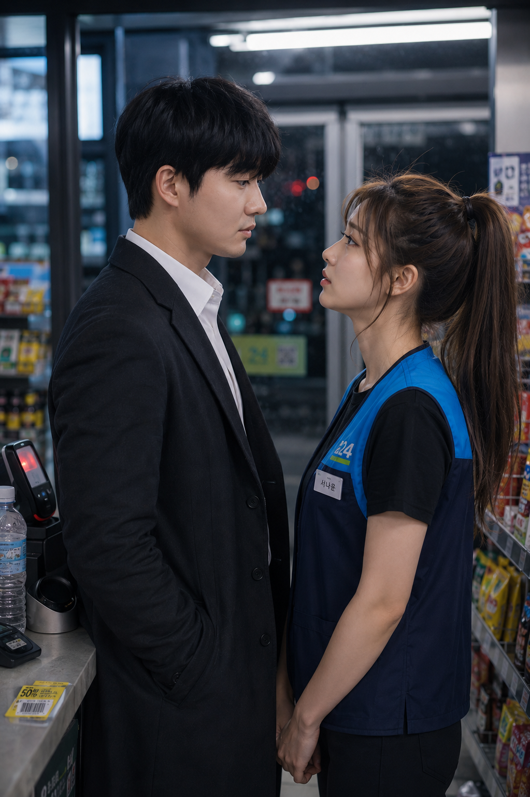

유하린"오빠, 이쪽 파일은 메일로 먼저 보내 둘게요."
연말 행사 관련 회의가 예상보다 길어졌고, 사람들이 하나둘 빠져나간 뒤에도 하린은 끝까지 남아 자료를 정리하고 있었다. 시안은 창고에서 마지막 샘플 박스를 옮겨 놓고 돌아와 그녀 자리 뒤에 섰다. 하린은 피곤한 와중에도 오늘은 이상하게 기분이 좋아 보였다. 어젯밤 회의실에서 확인받은 말이 아직 몸에 남아 있는 얼굴이었다.
김시안"이제 들어가도 돼. 오늘 충분히 했어."
유하린"아니에요. 오늘은 진짜 제가 먼저 끝내고 싶어요."
김시안"욕심난다더니."
유하린"네. 좀 많이요."
하린은 웃으면서도 손을 쉬지 않았다. 누가 봐도 들뜨고 있었는데, 그 들뜸을 허투루 쓰지 않고 결과로 남기려는 쪽으로 버티고 있었다. 시안은 그런 그녀를 잠깐 보다가 물 한 병을 책상 위에 내려놓았다.
김시안"다 끝나면 연락해."
유하린"오빠는요?"
김시안"잠깐 편의점 들렀다 갈게."
그 말에 하린이 고개를 들었다가, 아주 짧게 눈빛이 흔들렸다. 어젯밤 편의점에서 만난 여자의 시선이 순간 떠오른 탓이었다.
유하린"그... 그분 또 계실까요."
김시안"누구."
유하린"아니에요. 그냥요."
하린은 얼른 시선을 내렸지만, 시안은 이미 무슨 생각인지 알아챘다.
김시안"신경 쓰여?"
유하린"조금."
김시안"왜."
유하린"기다리기만 안 한다고 했거든요."
하린은 민망한지 작게 웃었다가, 곧 다시 진지해졌다.
유하린"근데 저도 이제 기다리기만 안 하려고요."
김시안"알아."
유하린"그러니까 오늘은... 오빠 나가도 너무 늦진 말고요."
그 말에는 부탁과 견제가 동시에 들어 있었다. 시안은 그녀 머리 위를 가볍게 한번 쓸어 준 뒤 먼저 회의실을 나섰다.
편의점에 들어섰을 때 나윤은 이미 계산대 밖으로 반쯤 몸을 빼고 서 있었다. 늘 그렇듯 들어오는 시간부터 예상하고 있었다는 듯한 얼굴이었다.
서나윤"오늘은 늦을 줄 알았어요."
김시안"왜."
서나윤"좋은 얼굴 또 하고 있었을 것 같아서."
시안은 냉장고 문을 열어 물을 꺼냈다. 나윤은 그 뒤를 따라 몇 걸음 다가왔다.
서나윤"손님."
김시안"응."
서나윤"오늘은 제가 먼저 물어볼래요. 아까 그 사람, 회사 사람이죠?"
김시안"나윤 씨."
서나윤"맞네."
나윤은 시안이 대답을 피하는 걸 오히려 확인으로 받아들이는 표정이었다. 계산대에 물병을 올려놓자 그녀는 바코드를 찍지도 않은 채 손바닥으로 병을 눌렀다.
서나윤"저 오늘 일 끝나고 좀 걷고 싶어요."
김시안"늦었어."
서나윤"그러니까요. 늦어서 더."
김시안"집에 가."
서나윤"싫어요."
단칼에 나온 대답이어서 시안도 잠깐 웃었다. 나윤은 그 웃음이 보이자마자 계산대 모서리를 돌아 그 앞에 섰다. 거리감이 확 줄어들었다.
서나윤"손님, 저 계속 참으라고만 하면 더 이상해져요."
김시안"뭘 참는데."
서나윤"궁금한 거. 신경 쓰이는 거. 그리고..."
나윤은 잠깐 숨을 들이켰다가, 끝내 피하지 않고 말을 이었다.
서나윤"먼저 기억되고 싶은 거."
편의점 형광등 아래서 그런 말을 하는 얼굴치고는 너무 정면이었다. 시안이 뭐라 답하기도 전에 나윤이 먼저 셔츠 소매를 가볍게 잡았다. 270화에서처럼 앞깃을 확 끌어당기지는 않았지만, 이번에는 오히려 더 의도가 분명했다. 붙잡고, 보고, 남기는 손길.
김시안"나윤 씨."
서나윤"네."
김시안"지금은 너무 급해."
서나윤"급한 거 맞아요. 근데 늦는 건 더 싫거든요."
나윤의 목소리가 아주 조금 떨렸다. 질투 때문에만 뛰는 게 아니라, 자기 자리가 생기기도 전에 밀려날까 봐 조급한 어린 마음이 그대로 드러난 순간이었다. 시안은 그 표정을 잠깐 내려다보다가, 결국 그녀 손목을 가볍게 잡아 힘을 빼게 했다.
김시안"울 것 같으면 그만."
서나윤"안 울어요."
김시안"그럼."
서나윤"그러면 한 번만."
대답이 끝나기 전에 나윤이 먼저 발끝을 세워 입을 맞췄다. 짧고 직선적인 키스였다. 확인받고 싶어서라기보다 자기 존재를 먼저 박아 넣으려는 종류의 입맞춤. 시안은 바로 밀어내지 않았고, 대신 그녀 어깨를 붙들어 더 무리하게 깊어지지 않게 속도만 조절했다. 나윤은 그 짧은 균형만으로도 숨이 훅 달아오른 얼굴이 됐다.

서나윤"이제는 제가 먼저 기억날 거예요?"
김시안"지금도 충분히 기억나."
서나윤"그건 손님 기준이잖아요."
김시안"그럼 나윤 씨 기준은 뭔데."
서나윤"다른 사람 보고 와도, 마지막에 제 쪽으로 시선 돌아오는 거."
시안은 대답하지 않았다. 나윤은 그 침묵을 불만스러워하면서도 물러서지는 않았다. 오히려 숨을 가다듬고 다시 웃었다.
서나윤"됐어요. 오늘은 이 정도면."
바로 그때 편의점 문이 열렸다. 찬 공기와 함께 바깥에 서 있던 하린의 얼굴이 보였다. 회의실 일을 마치고 나와, 혹시 시안이 아직 있을까 싶어 들른 참이었다. 그런데 눈에 들어온 건 계산대 밖에 나와 선 나윤과, 아직 흐트러진 시안의 소매였다.
하린은 한 걸음 안으로 들어오다 멈췄다. 나윤도 바로 돌아봤다. 짧은 정적 속에서 둘은 어젯밤 형광등 아래 마주 섰던 기억을 거의 동시에 떠올렸다.
유하린"..."
서나윤"아."
나윤의 입꼬리가 아주 천천히 올라갔다. 들킨 쪽이 누군지, 목격한 쪽이 누군지 단번에 뒤집어 버릴 수도 있다는 걸 아는 표정이었다. 하린은 봉투를 쥔 손에 힘을 주면서도 먼저 시선을 피하지 않았다.
유하린"오빠."
그 한마디가 평소보다 훨씬 조용했는데도, 편의점 안 공기가 한 번에 팽팽해졌다.